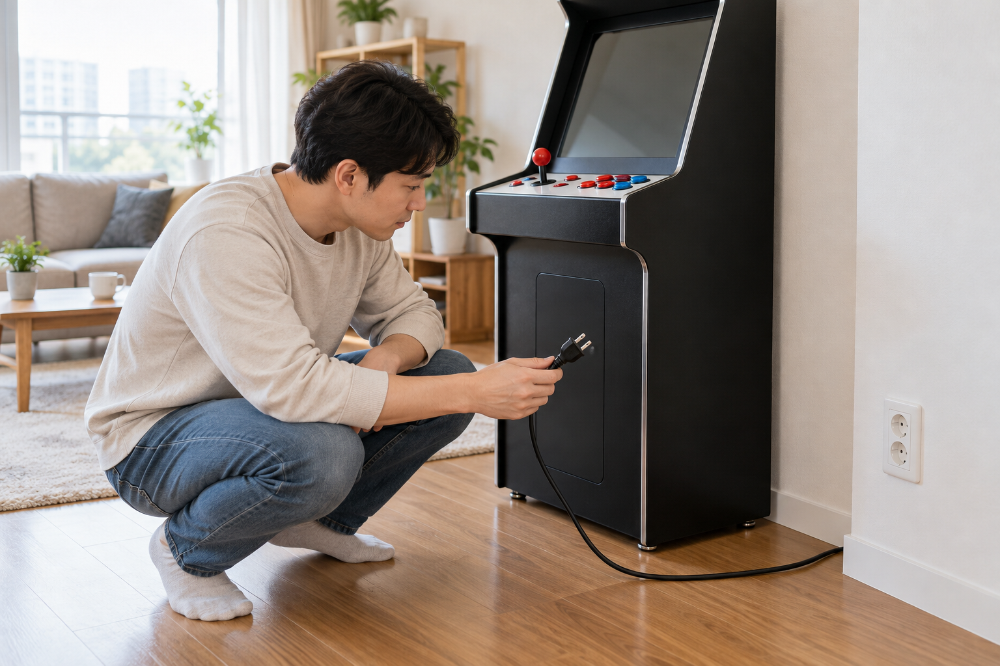
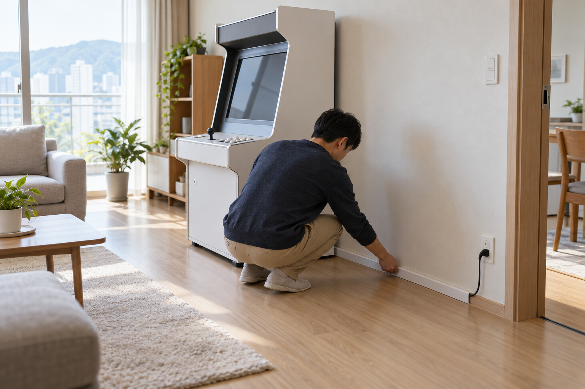

가정용 오락기 전원을 연결할 때는 먼저 주문한 제품에 맞는 전원선인지 확인하고, 플러그와 콘센트 겉면에 손상이나 흔들림이 없는지 살펴야 합니다. 전원선이 가구에 눌리거나 보행 통로를 가로지르지 않게 정리한 뒤, 제품 안내 순서에 따라 한 번 연결하고 화면·소리·조작 반응을 차례로 확인하세요.

제품 안내와 전원선 규격을 먼저 맞추세요
주문 내역과 제품 안내에서 본체 이름, 전원 입력 방식, 동봉된 전원선이 서로 맞는지 확인하세요. 모양이 비슷하다는 이유로 다른 기기의 케이블을 연결하거나 용도를 모르는 어댑터를 함께 쓰지 말고, 전원선이 빠졌거나 추가로 필요하다면 정확한 제품명을 판매자에게 전달해 호환 여부를 물어야 합니다. 노리박스 공개 제품 목록에는 ‘노리박스 오락기용 220V 전원케이블’이 별도 상품으로 안내되어 있으므로 모든 오락기에 같은 케이블이 공통으로 포함된다고 가정하면 안 됩니다.
전원선은 플러그 모양만 보지 말고 주문한 오락기의 제품 안내와 함께 확인해야 합니다.
설치 순서 전체는 오락기를 처음 설치할 때 가장 먼저 확인할 것에서 이어서 볼 수 있습니다.
콘센트와 멀티탭의 상태를 확인하세요
벽 콘센트나 멀티탭이 흔들리지 않는지, 플러그가 헐겁게 걸리지 않는지, 겉면에 그을림이나 깨짐이 없는지 전원을 넣기 전에 살펴보세요. 멀티탭을 써야 한다면 연결할 기기의 소비전력과 멀티탭의 정격 용량을 제품 표시에서 비교하고, 정격을 읽을 수 없거나 상태가 불분명하면 사용하지 말고 판매자나 전기 전문가에게 확인하세요. 국가기술표준원도 멀티탭·콘센트·플러그의 안전 사용 주의사항을 별도로 안내하고 있습니다.
콘센트와 멀티탭은 겉면 상태와 제품 표시를 확인할 수 있을 때만 연결에 사용하세요.
- 플러그와 콘센트 겉면의 깨짐·그을림 여부
- 플러그를 꽂았을 때 흔들리거나 헐겁지 않은지
- 멀티탭의 정격 표시와 함께 연결할 기기 구성
- 물기와 습기가 닿지 않는 위치인지

전원선이 눌리거나 통로를 가로지르지 않게 두세요
전원선은 오락기 받침이나 가구 다리에 눌리지 않게 하고, 문이 닫히는 자리와 사람이 지나는 바닥을 피해서 벽 가장자리로 정리하세요. 남는 선을 본체 뒤 통풍구에 밀어 넣거나 플러그가 당겨진 상태로 두지 말고, 기기를 약간 움직여도 연결부에 힘이 전달되지 않는지 확인하세요. 케이블 덮개나 고정 용품을 쓸 때도 전원선을 지나치게 꺾거나 눌러 고정하지 않는 편이 좋습니다.
전원선 동선은 플러그가 당겨지지 않고 사람이 걸려 넘어지지 않도록 설치 자리와 함께 정해야 합니다.
처음 연결한 뒤 반응을 하나씩 확인하세요
연결을 마치면 오락기를 안전하게 켜고 끄는 방법에 따라 지정된 스위치를 한 번 조작하고 기기의 반응을 기다리세요. 화면, 소리, 조이스틱과 버튼을 따로 확인하고 문제가 있으면 전원을 반복해서 껐다 켜거나 다른 전원선을 바꾸어 꽂기 전에 현재 연결 상태와 화면을 기록하세요. 평소와 다른 냄새나 소리, 케이블의 눈에 띄는 손상이나 과도한 열이 느껴지면 사용을 멈추고 제품명과 증상을 정리해 문의하세요.
첫 전원 연결에서는 여러 설정을 바꾸지 말고 화면·소리·조작 반응을 하나씩 확인해야 합니다.
노리박스 오락실게임기와 전원 관련 제품은 제품자세히보기에서 확인하고, 제품별 전원선과 연결 방법이 불분명하면 연락하기에서 제품명을 적어 문의하세요.